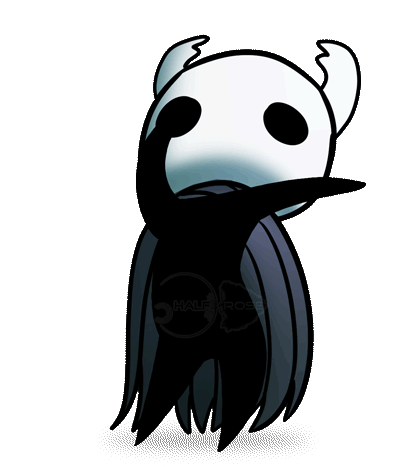

The Knight, Little Ghost, etc...
In Hollow Knight, you do not play as the titular Hollow Knight. Instead you play as one of its forgotten and discarded brethren.
The Knight (sometimes referred to as "Little Ghost" by Hornet) is a vessel similar to that of the Hollow Knight, but was deemed unworthy by the king and discarded.
You start off with a broken, old, rusty nail (the nail is the weapon of Hallownest) and a basic moveset and are able to improve your moveset and nail damage as you progress through the game.
Conjecture Time!
Since Hollow Knight's story telling isn't spoonfed to us, a lot of the motivations behind these character's actions aren't explicity stated. We do not know where exactly the Knight was before they came back to Hallownest. It is presumed that they did leave for a time, as you start in King's Pass, which connects to the Howling Cliffs. The only connection to the Howling Cliffs are Greenpath and the outside world. Especially since falling into King's Pass would indicated that they wanted to come back down.
The motivation behind their mission is also never made clear, however I believe that, since vessels are presumed to be mute (the Knight is), they have a telepathic link through which the Knight was able to hear and feel the Hollow Knight's pain. I believe this mission was essentially a rescue mission.
Note:
Ghost does not have a gender, it is explicity stated within the game files that they are not supposed to possess will, and are therefore considered objects. References to the character were proof read to ensure that no one referred to them with male pronouns.